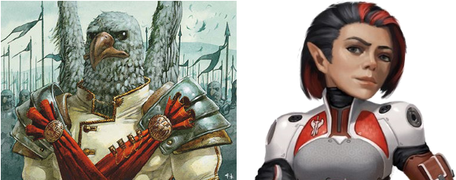
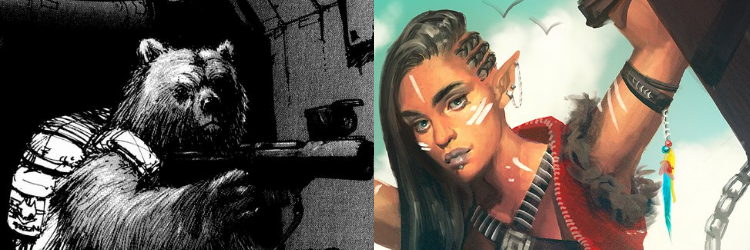
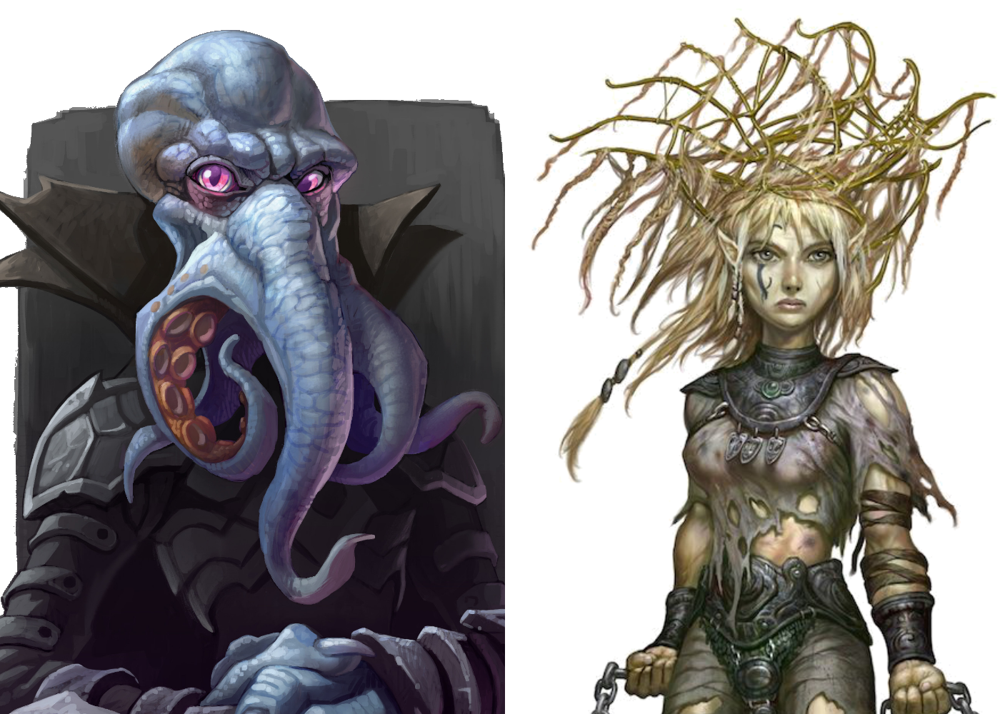
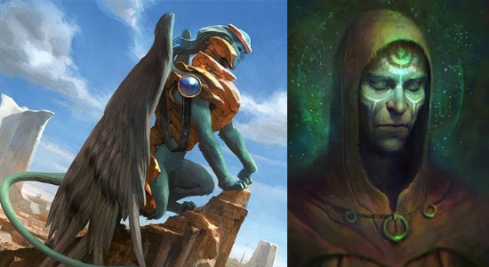

Galaxies of Fantasy Adventure
by Parker Harris Emerson
The Osmium Universe is one of infinite possibilities, a kitchen-sink where awesome is dialed to 11. This is full minotaurs with chain guns and undead dragon hackers kitchen-sink, where every trope is included where it would heighten the players sense of enjoyment and enthusiasm.
The GM should be a fan of their players, and the players should be excited to play in the universe, so the universe has to be epic enough for the players to feel truly grandiose against the backdrop.
I've always admired games like Rifts and Warhammer 40K for just saying “Fuck it, we've got elves. And rail guns.” If you're willing to suspend your disbelief to allow for power armor and FTL travel and weird aliens, why not just make the weird aliens
Humans exist on many planets. They far predate humans on Earth. They might have slightly blue skin, or three purple birthmarks on each temple, or a slight skin-fold on the nose, but if they can interbreed, they're called humans. Humans from Earth are called Terrans.
I'm going for an Marvel Cinematic Universe / Asgaard approach to technology. What's the difference between an arcane ritualist and a scientist? A labcoat. Magic is technology and it's omnipresent.
Though consistency is key.
I don't actually care how anything really works, I just care about (a) how it looks, and (b) how predictable it is for you as players. Always assume that any science bullshit reason I give you for something is only 90% true, and the other 10% is magic. It is important to me that you feel confident in the truths I have said: if I tell you something is impermeable to fire, it should be, regardless of future science truths that I find on YouTube. If I tell you something and it turns out not to be true, it should be revealed as a new truth for your characters, not as a “GM fiat” bait-n-switch.
About fifty years from now, an alien race shows up above Earth. They called themselves the Hegemony. These bird-people had a very unique view of property ownership and annexed Earth. They displaced most of the Terran Humans they found there, offering them jobs on other planets, first in the Solar System and eventually in other systems. They weren't evil, just huge jerks.
For over two hundred years, many Terrans waged an Insurgency against their Hegemonic overlords. This Insurgency slowly turned the planet Earth into a dangerous pit of monsters and black magic.
Meanwhile, generations of Terrans were growing up on other planets, never having seen Earth's sun. They were encountering other great empires of universe, among them the Federation, a aggressively benevolent race of bears, elves, and cyborgs.
About ten years ago, the Federation finally negotiated the release of Earth from Hegemonic grasp. Terrans find themselves independent for the first time, a tiny backwards planet on an intergalactic stage home to countless species.
The universe is infinite, with great powers sweeping across countless galaxies and an untold number of dimensions. Yet Humans are self-centered, so the focus on this first campaign will be on the Seven Wastes sector and the small system full of Terrans at its center.
The Hegemony are an empire of bureaucrats, artists, and builders. They are driven not by greed, but by a deeply ingrained and ritualistic understanding of property. A Hegemony citizen considers an unremarkable dinner gift to be the intellectual property rights of images of a vase owned by their grandmother, not including images taken at sunset, and provided that the giver's siblings survive the grandmother. Complicated contracts are easily parsed by Hegemony citizens. Formal gift-giving ceremonies are an almost daily occurrence, and buying something as simple as a gallon of milk often requires certain nuances and subtleties lost on most foreigners.

Two species make up the forefront of the Hegemony: the Aven and the Cog Dwarfs. The Aven are the founders of the Hegemony, an ancient avian race whose influence is felt throughout the universe. First among their many client races is the Cog Dwarfs, a race whose understanding of the Hegemony's property rights is so complete that legend says they sold their own race to the Aven.
Six races make up the leadership council of the Federation, though Terrans mostly only think of the ursine Vrar and the unctuous Summer Elves. The Federation is guided by the principles of equality, liberty, and safety, and they bring the light of civilization to the far corners of the universe.
Using their definitions of equality, liberty, and safety. The Federation are empire-builders, driven by benevolence. Benevolence they will force upon you whether you like it or not.

The Vrar are the warriors and laborers of the Federation, eight-foot-tall bears with a culture rooted in nobility and service. The Summer Elves are the leaders of the Federation: only they have the wisdom and patience to lead other races to the light. The Federation has other species, like the cybernetic Recognitives and the pious Kuo-Toa, but their presence in the Solar System has remained a curiosity until the last few years.
Slavery and apartheid are terrible things. It has taken the Mind Flayers a long time to realize this.
For countless epochs, the Mind Flayers of the Commune ruled galaxies with an iron fist, dining on the brains of their slaves. Thousands of years ago, they grew as a species, and granted rights to non-Mind Flayers. Limited rights to partake in a society that favored Mind Flayers at every turn. A system of apartheid kept the Mind Flayers' client races as barely more than slaves, though with each generation their rights grew.
Five hundred years ago, the formal Commune was established and full citizenry was granted to all. The system still favors the Mind Flayers, but the law does not.
Now, the Commune is an empire focused on solidifying the expansions they made in the past. Resurrecting species hunted to extinction and uplifting other species to aid in their great quest to build a jewel of jewels.

They are aided in their quest by the Shadowfoot Halflings, former slaves of the Commune, the Hulking Simians, uplifted gorillas who originally filled the ranks of the commune military, and the Oblex, sentient oozes who evolved out of the brain pools of aged Mind Flayers.
The Mind Flayers of the Commune don't have the same presence in the galactic awareness of the Terrans that the Hegemony and Federation do, but they're an intergalactic superpower on par with any other.
The Sphinx are one of the oldest races in the universe, predating many of the Gods themselves. The Sphinx know all, and their network of spies and archivists are second-to-none. They seem to have no ambitions beyond complete and total omniscience, though the true nature of the Sphinx is always a mystery. Their hierarchy is based on the importance of the secrets they hold – each Sphinx lies at the center of of a lair, whether that lair be a castle, a dreadnought, or a Dyson sphere.

The Sphinx are served in all things by a legion of robots and virtual intelligences, as well as a species of humans known as the Grovers, who function both as acolytes of the Sphinx and emissaries of their will.
The Philosopher Kingdom of the Sphinx doesn't operate like a normal empire, driven by trade or conquest. And yet, despite lacking many of the trappings of a traditional civilization, the Kingdom possesses such great stores of knowledge that it operates on a playing field with the greatest of powers in the universe.
Osmium and Osmium Universe are trademarked (TM) by Parker Harris Emerson. The Osmium Universe is Copyright 2018 Parker Harris Emerson. Genesys and the Narrative Dice System Copyright 2017-2018 Fantasy Flight Games.